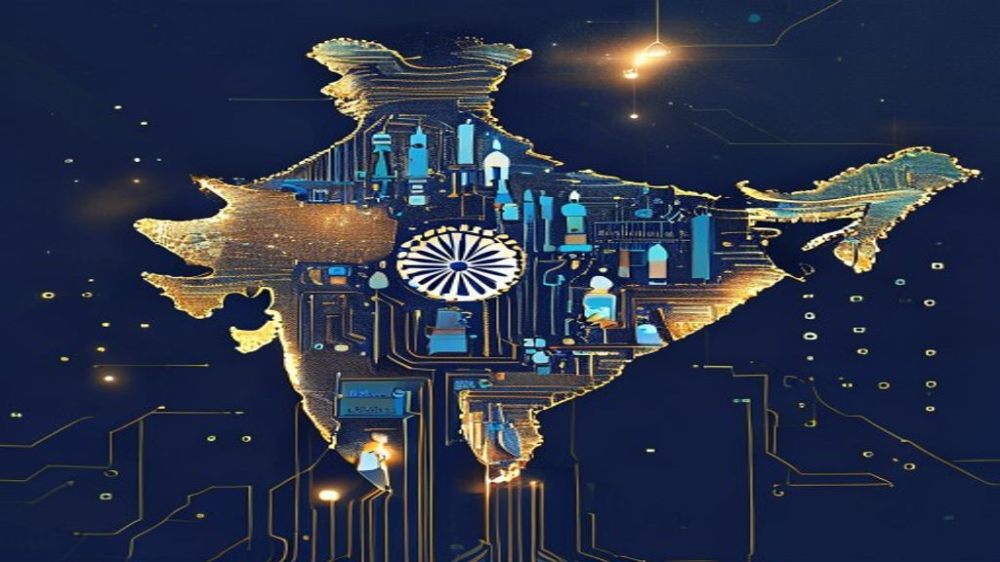
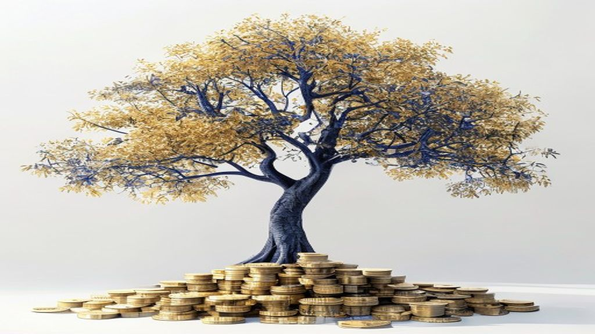
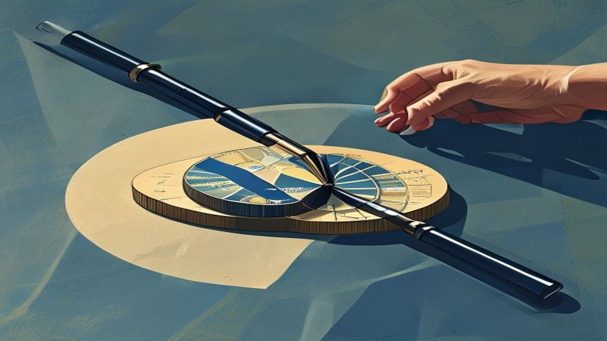
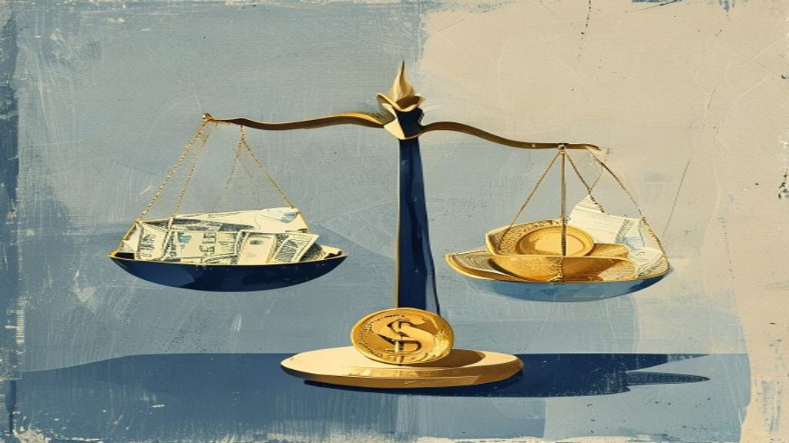
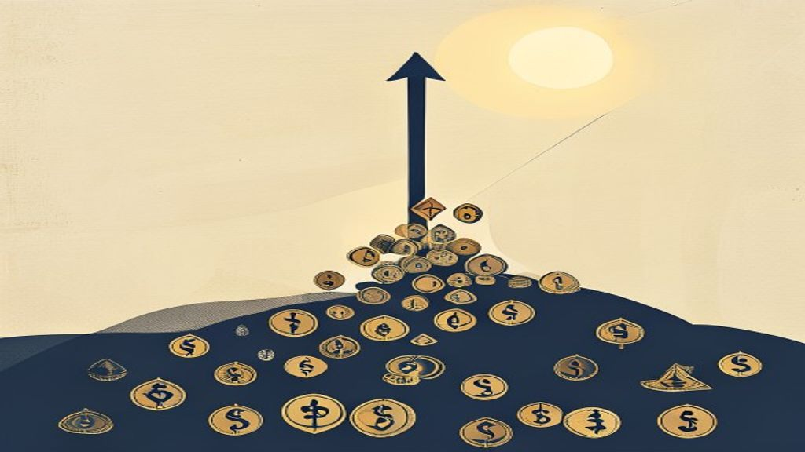
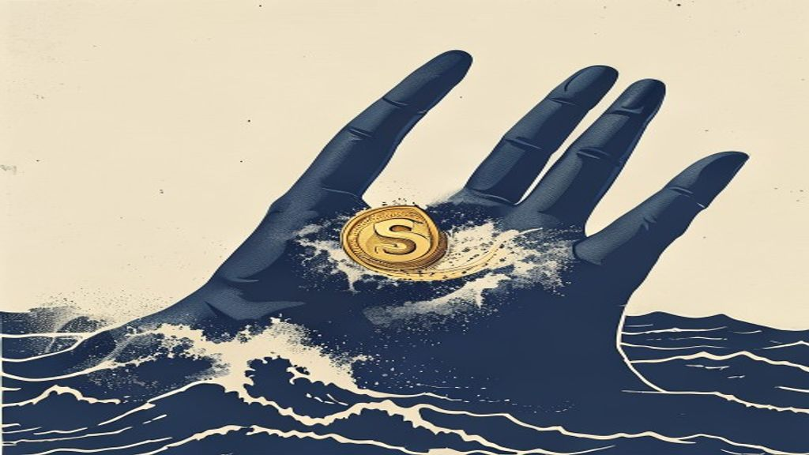

Latest insights
Personal-finance explainers, market briefs, F&O positioning and business stories — all in one place.
Dearness Allowance Hike: Understanding Its Impact on Your Finances
Dearness Allowance (DA) is a vital component of salary and pension for Central Government employees and pensioners in India. It serves as a cost-of-living adj.
Pre-Market Brief — 17 July 2026
Global markets show a mixed-to-negative tone, with US tech under pressure and Asian indices largely lower. GIFT Nifty signals a slightly negative opening bias.

India Becomes World's Top 'Brain Centre' for Retail & FMCG Giants
India is now the leading global hub for 'Global Capability Centres' (GCCs) in retail and fast-moving consumer goods (FMCG) sectors. These centres are like adv.

SEBI's Vision: Unpacking India's Life Cycle Funds
Life Cycle Funds are an investment approach where asset allocation automatically adjusts based on an investor's age or remaining investment horizon. SEBI has .
NRI Tax Filing: When to File ITR After Moving Abroad
Becoming a Non-Resident Indian (NRI) does not automatically end your tax obligations in India. Your residential status for tax purposes is crucial and differs.

Market Wrap — 16 July 2026
Indian benchmark indices, Nifty 50 and Bank Nifty, closed largely flat to marginally negative today. Geopolitical concerns, specifically the Iran-US conflict,.
Pre-Market Brief — 16 July 2026
Global Tone:** US markets closed positive overnight, while Asian markets are mixed this morning with Nikkei down and Hang Seng up. **GIFT Nifty Bias:** Signal.
India F&O Pulse — 16 Jul 2026: what the day's options & futures positioning is whispering
End-of-day reading of India's F&O open interest, PCR, max pain and FII positioning — explained simply.
What India's New Minimum Support Price (MSP) for Kharif Crops Means for Your Wallet
The Indian government recently increased the Minimum Support Price (MSP) for 14 Kharif (monsoon) crops for the 2026-27 marketing season. MSP is a guaranteed m.

India's CPI at 4.38%: Calculate Your Personal Inflation
India's Consumer Price Index (CPI) inflation was reported at 4.38% in June 2026, representing a national average. Your personal inflation rate can significant.
Bengaluru Landowner's ₹11.8 Cr Tax Win: Capital Gains Explained
A Bengaluru resident successfully claimed full tax exemption on capital gains from selling 17 apartments, amounting to ₹11.8 crore. The Income Tax Appellate T.

Market Wrap — 15 July 2026
Indian equities concluded the day marginally higher, giving up most of their intraday gains amidst volatile trading. Geopolitical tensions, elevated crude oil.
Pre-Market Brief — 15 July 2026
Asian markets show positive momentum, while US indices data is unavailable, but news points to cautious optimism on easing inflation. GIFT Nifty signals a pos.
Signature Global Q1 FY27 Pre-Sales: A Closer Look at Growth
Signature Global reported pre-sales of ₹1,970 crore for Q1 FY27, indicating strong operational activity. This figure represents a robust 25% quarter-on-quarte.
India F&O Pulse — 15 Jul 2026: what the day's options & futures positioning is whispering
End-of-day reading of India's F&O open interest, PCR, max pain and FII positioning — explained simply.
Your Groceries Just Got Pricier: India's Inflation Crosses RBI's Target
India's retail inflation, measured by the Consumer Price Index (CPI), rose to 4.38% in June 2026. This is the first time in 16-17 months that inflation has go.
DA Hike: Understanding Dearness Allowance Types and Calculation
Dearness Allowance (DA) is a component of salary paid to government employees and pensioners to offset the impact of inflation. It is calculated as a percenta.
ITR Filing 2026: Retaining Digital Tax Documents Securely
While ITR filing is largely paperless, it is crucial to securely retain all relevant digital tax documents. These digital records are essential for responding.

Market Wrap — 14 July 2026
Indian benchmark indices, Nifty 50 and Bank Nifty, closed lower today, shedding over half a percent each. The market decline was primarily driven by surging c.
Pre-Market Brief — 14 July 2026
Global markets presented a mixed picture, with US indices closing lower, Asian markets mixed, and South Korea's Kospi experiencing a sharp decline. GIFT Nifty.
HCL Tech Q1 Results: Key Takeaways for Investors
HCL Tech reported a Q1 net profit of ₹4,626 crore, marking a significant 20% year-on-year increase. Sequentially, the company's profit grew by 3% quarter-on-q.
India F&O Pulse — 14 Jul 2026: what the day's options & futures positioning is whispering
End-of-day reading of India's F&O open interest, PCR, max pain and FII positioning — explained simply.
Your Bank Just Got Stricter: New Rules Against Mis-Selling Financial Products
The Reserve Bank of India (RBI) has introduced new rules against banks mis-selling financial products. These rules became effective from July 1, 2026.
IPO Report Card: 30 to 60 Days After Listing — July 2026
This report covers 21 IPOs that listed between 31 and 59 days ago, including both Mainboard and SME issues. Out of these, 9 companies are currently trading ab.
US Inflation Data: What it Means for Your Indian Investments
Upcoming US inflation figures and Federal Reserve policy decisions could significantly influence global financial markets. A higher-than-expected US inflation.
Reporting Capital Gains on MFs: A Guide for AY26-27
Accurately reporting capital gains from mutual fund investments in your Income Tax Return is mandatory. Equity-oriented and debt-oriented mutual funds are sub.

Market Wrap — 13 July 2026
Indian benchmark indices, Nifty 50 and Bank Nifty, staged a remarkable recovery from early losses to close marginally higher. Strong inflows from Foreign Inst.
Pre-Market Brief — 13 July 2026
Global markets presented a mixed picture, with US and European indices closing higher, while Asian markets showed a negative bias this morning. GIFT Nifty ind.
Upcoming IPOs, Explained Simply — July 2026
This week, we look at IPOs from Laser Power & Infra Limited and Happy Steels Limited that are closing today. We also preview upcoming IPOs from SBI Funds Mana.
India F&O Pulse — 13 Jul 2026: what the day's options & futures positioning is whispering
End-of-day reading of India's F&O open interest, PCR, max pain and FII positioning — explained simply.

What is Index Rebalancing and Why Does it Matter to Your Investments?
Index rebalancing is like updating a shopping basket (stock market index) to ensure it accurately reflects the market. It happens regularly, typically every s.
Bank Holidays in July: Plan Your Finances Around Upcoming Closures
Banks across India, including major players like SBI and HDFC, will observe several holidays between July 13 and July 19, 2026. These closures are due to vari.
New Tax Regime: 5 Ways to Reduce Your Tax for AY 2026-27
The new tax regime offers lower tax rates but limits traditional deductions, leading to a common misconception that no tax saving is possible. Salaried indivi.

Why Large & Mid Cap Funds Look Promising Now: An Abakkus View
An Abakkus Mutual Fund study suggests Large & Mid Cap Funds are an attractive investment category currently. The study highlights improving corporate earnings.
RBI Governor Tightens Rules for Online Lending Platforms
RBI Governor Shaktikanta Das recently announced new guidelines for Peer-to-Peer (P2P) lending platforms. These platforms connect individuals who want to lend .
Bank Holidays: Why July 11 Sees Banks Closed Across India
Public and private sector banks across India are closed today, July 11, due to the second Saturday rule. This closure is a standard practice implemented by th.
ITR Login Password Reset: Alternatives Without Aadhaar OTP
If you've forgotten your Income Tax e-filing portal password, several methods allow you to reset it. You can regain access even if you don't have your Aadhaar.
TCS Q1 FY27 Earnings: Navigating Growth Amidst Margin Pressures
Tata Consultancy Services (TCS) reported a consolidated net profit of ₹13,349 crore for Q1 FY27, a 4.6% year-on-year increase. Revenue from operations grew 14.
Your Loan Recovery: New Rules from RBI Mean More Respect, Less Harassment
The Reserve Bank of India (RBI) has introduced new rules for how loan recovery agents can contact you. From July 1, 2026, agents can only call or visit betwee.
Why Cupid Share is Rising: Understanding the Factors Behind the Rally
Cupid Ltd. has seen a significant surge in its share price, driven by strong business fundamentals and market sentiment. The company's focus on manufacturing .

Geopolitical Events: What Mutual Fund Investors Should Do
Geopolitical events like the US-Iran conflict can cause significant short-term volatility in specific market sectors. Chasing recent performance, such as the .

Market Wrap — 10 July 2026
Indian equities witnessed a strong rally today, with all major indices closing significantly higher. Broad-based buying, particularly in Realty, PSU Bank, and.
Pre-Market Brief — 10 July 2026
Global markets are mixed, with the Dow and S&P 500 up, while the FTSE and Shanghai Composite are down. The GIFT Nifty indicates a positive bias, suggesting a .
TCS Q1 Results: Board declares an interim dividend of ₹12 per share. Details here
Tata Consultancy Services (TCS) reported a robust start to FY25 with healthy revenue and profit growth in the June quarter. The company's Board of Directors h.
India F&O Pulse — 10 Jul 2026: what the day's options & futures positioning is whispering
End-of-day reading of India's F&O open interest, PCR, max pain and FII positioning — explained simply.
India-UK Trade Deal Kicks Off: What It Means for Your Wallet
India and the UK are launching a new trade agreement from July 15, 2026. This deal will cut or remove import taxes (tariffs) on many goods traded between the .
July 2026 DA Hike: Understanding the 3% Increase Likelihood
Central government employees and pensioners are likely to receive a 3% Dearness Allowance (DA) hike in July 2026. The final revision hinges critically on the .
Open-Market Buybacks: Taxing Your Gains and Investor Strategy
SEBI has reintroduced open-market share buybacks, effective August 1, 2026, allowing companies to repurchase their shares via stock exchanges. Unlike tender o.

Market Wrap — 09 July 2026
The Nifty 50 closed at 23,962.80, up 0.34%, while the Bank Nifty gained 0.90% to 57,252.45. The market saw a gap open and a range-bound trend, with volatility.